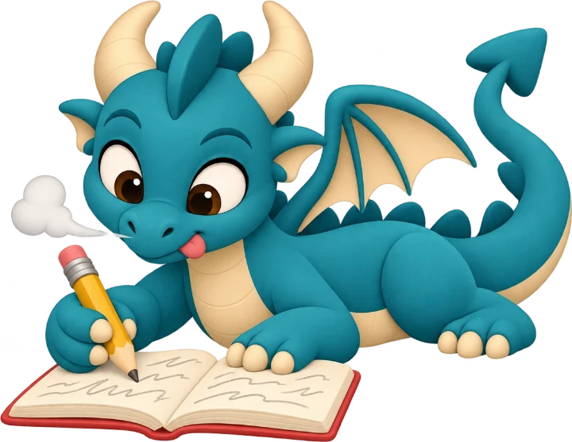

Leçon 3 · écrire un livre-jeu · à compléter
Avant d’écrire, je lis ma consigne et les cases « J’ai pensé à ». Je raconte ensuite ma scène pour que le lecteur la vive comme s’il y était.

Mots à placer : tous · choisir · les scènes d’avant · la suite
Scène 12
Si tu prends la barque, va au 8.
Scène 8 · ma scène
Le héros prend la barque… jusqu’au prochain choix.
Les choix
Ajoutés par l’enseignant, avec ce que le lecteur gagne ou perd
Certaines scènes commencent l’histoire, la terminent ou conduisent directement à la suite. Ma consigne me l’indique.
8
1Tu détaches la vieille barque du saule et tu montes à bord. Elle tangue un peu, puis se stabilise.
2Au fond, sous une couverture humide, tu découvres une lanterne en cuivre. Elle sent encore l’huile.
3Tu rames de toutes tes forces. Le courant pousse la barque de côté, l’eau clapote contre le bois, et tes bras commencent à brûler. Enfin, la coque racle les galets de l’autre rive.
4Le soleil touche déjà les collines. Pour rejoindre le village avant la nuit, le sentier de la forêt est le plus court. Mais un long hurlement en monte, et tu frissonnes. Un autre chemin rejoint le village en passant par le vieux moulin.
Ajoutés par l’enseignant
Si tu prends le sentier de la forêt, va au 27.
Si tu suis le chemin du moulin, va au 15.
La scène 8 est découpée et mélangée : écris dans chaque rond le numéro de son moment.
Tu rames de toutes tes forces. Le courant pousse la barque de côté, l’eau clapote contre le bois, et tes bras commencent à brûler. Enfin, la coque racle les galets de l’autre rive.
Le soleil touche déjà les collines. Pour rejoindre le village avant la nuit, le sentier de la forêt est le plus court. Mais un long hurlement en monte, et tu frissonnes. Un autre chemin rejoint le village en passant par le vieux moulin.
Tu détaches la vieille barque du saule et tu montes à bord. Elle tangue un peu, puis se stabilise.
Au fond, sous une couverture humide, tu découvres une lanterne en cuivre. Elle sent encore l’huile.
À la fin de la scène, ajoutés par l’enseignant
Si tu prends le sentier de la forêt, va au 27. · Si tu suis le chemin du moulin, va au 15.
Leçon 3 · écrire une scène · à compléter
Pour développer mon texte, j’ajoute des détails qui font vivre la scène.
Mots à placer : je sens · je vois · je touche · j’entends
Je vois
Le soleil touche déjà les collines.
J’entends
L’eau clapote contre le bois.
Je sens
La lanterne sent encore l’huile.
Je touche
La couverture est humide.
Deux ou trois détails suffisent : je choisis ceux qui comptent.
Mots à placer : ce qu’il fait · comment il parle · à quoi il ressemble
| À quoi il ressemble | Un vieux pêcheur à la barbe grise. |
| Ce qu’il fait | Il répare son filet, lève les yeux et sourit. |
| Comment il parle | « Tu peux l’utiliser pour traverser », dit-il. |
Je peux faire comprendre une émotion par les réactions du héros.
| Je nomme | Je montre |
|---|---|
| Tu as peur. | Ton cœur bat très fort. Tu recules d’un pas. |
| Tu es en colère. | Tu serres les poings et les dents. |
| Tu es content. | Tu sautes sur place en riant. |
Leçon 3 · écrire une scène · à compléter
Mots à placer : noms · demande · temps · façon de raconter
Si l’on peut arriver par le pont ou en barque, je n’impose pas une arrivée en barque.
Je m’entraîne
Réécris cette phrase avec « tu », au présent : Il ouvrit la porte et entra dans la cabane.
Tu ouvres la porte et tu entres dans la cabane.
Mots à placer : remarque · décider · dévoiler
Je m’entraîne
Devant deux portes, écris une phrase qui fait deviner un danger derrière l’une d’elles.
Derrière la porte de gauche, tu entends un grognement sourd.
Mots à placer : l’orthographe · l’histoire · ma consigne
À toi d’écrire ta scène !